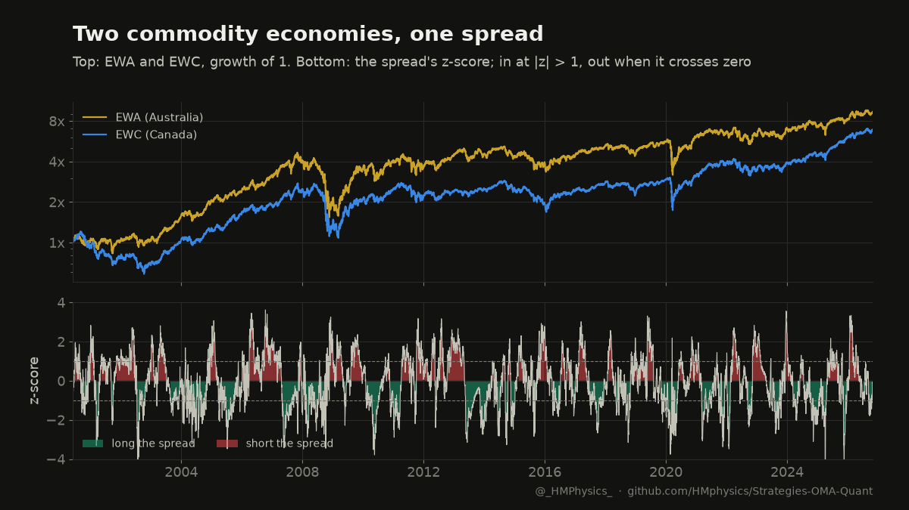
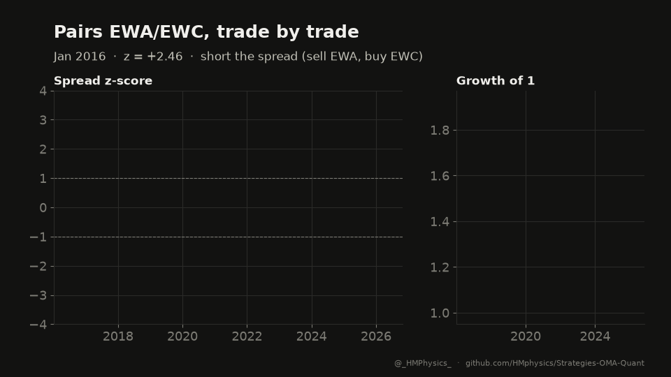
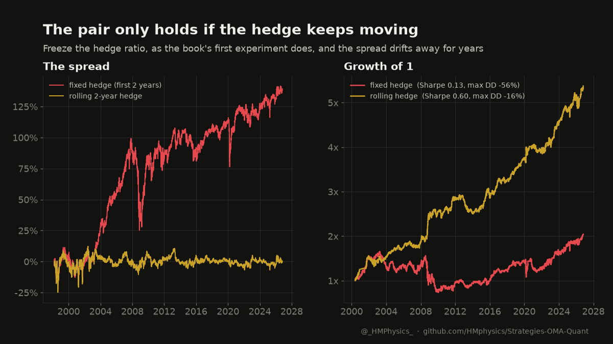
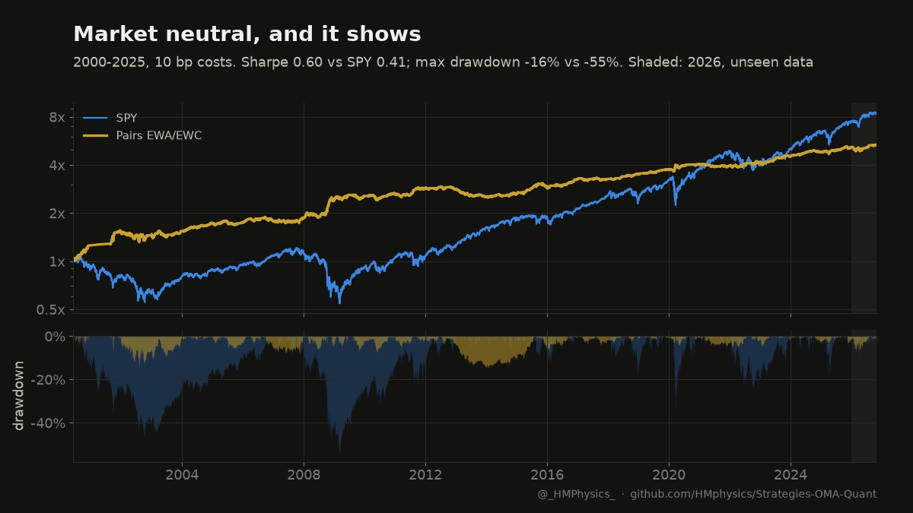
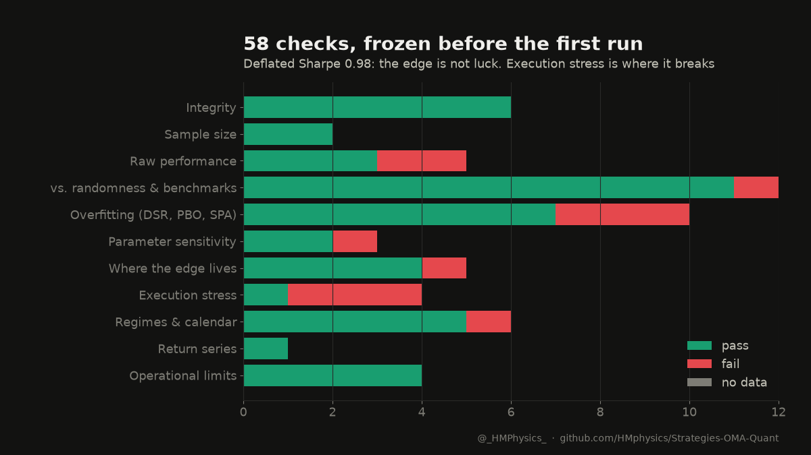
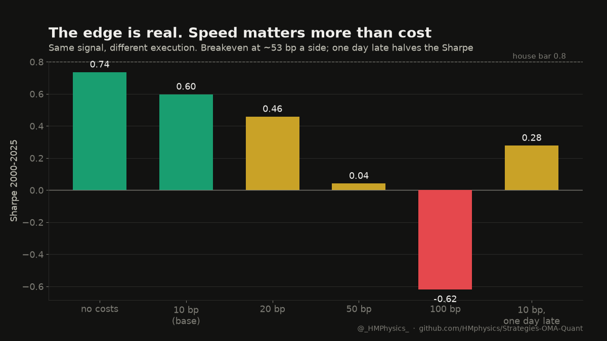

216 Quant Books · Episode 2 · Book 1 · Strategy 2 of the series
Pairs trading Australia against Canada
The worked example from Daniel P. Palomar's Portfolio Optimization: Theory and Application (Cambridge, 2025). Two commodity economies, one spread, and the question of whether the gap pays once you trade it for real.
Sharpe, net0.60SPY 0.41
Max drawdown−16%SPY −55%
Beta to SPY0.03market neutral
Sharpe at 5x costs0.04one day late: 0.28
Sample 1 June 2000 to 31 December 2025 (6,435 sessions), 10 bp per side, executed at the next close, gross exposure 1, no leverage. Same engine and costs for every line.
How it plays
Buy the laggard, short the leader, wait
Australia and Canada live off the same things: metals, energy, banks. Their stock markets, bought through EWA and EWC, drift together over the years. When one runs ahead, the gap usually closes.
Every day the strategy regresses log EWA on log EWC over the last two years to get the hedge ratio, builds the spread and measures how stretched it is with a six-month z-score. Above +1 it shorts the spread, below −1 it buys it, and it gets out when the z-score crosses zero. About 11 round trips a year.

Top: the two ETFs. Bottom: the z-score, green while long the spread, red while short.

2016 to 2026, trade by trade: every stretch of the spread is a position, every return to zero a close.
The hedge has to move
Freeze it and the pair falls apart
The book's first experiment estimates the hedge ratio once and keeps it. We ran it too. The spread drifts away for years, the strategy keeps betting on a return that never comes, and it ends with a Sharpe of 0.13 and a 56% loss at its worst. Re-estimating the hedge every day is what holds the pair together.

Same pair, same signal. The only difference is whether the hedge ratio keeps up.
The record
Market neutral, and it shows

Growth of 1, log scale, with drawdowns underneath. The shaded strip is 2026: data that played no part in designing anything.
Version
Sharpe
CAGR
Vol
Max DD
2026 Sharpe
2026 Max DD
Pairs EWA/EWC, rolling hedge
0.60
6.6%
8.4%
−15.7%
0.17
−5.9%
Same signal, linear sizing
0.55
6.1%
8.0%
−15.6%
0.52
−6.4%
Fixed hedge (the book's first test)
0.13
2.5%
17.0%
−55.5%
0.52
−7.0%
SPY, buy and hold
0.41
8.2%
19.2%
−55.2%
0.98
−8.9%
2000–2025 sample unless marked. 2026 runs from January to October. Sharpe is over the T-bill rate.
What the engine checked
58 checks, frozen before the first run
YGGDRASIL is the audit engine behind this series. The rules and the pass thresholds were written down and hashed before a single backtest ran, and every variant we looked at counts against us.

Integrity, randomness tests and limits come out clean. Execution stress is where it breaks.
passDeflated Sharpe 0.98. After counting every variant, the edge is very unlikely to be luck.
passAlpha 4.7% a year, t = 3.3, beta 0.03. Returns that don't come from the market.
passTiming. Shuffle or shift the positions and the Sharpe goes negative. The edge is in when it trades.
failSharpe 0.60 against a bar of 0.8.
failExecution. One day late: 0.28, because the spread snaps back fast. Costs ×5 give 0.04, though the edge breaks even at 53 bp per side, far above what these ETFs really cost.
failOverfitting probability 0.54–0.64. A two-year hedge window works; one or three years don't.

Same signal, different execution. With ~12x turnover a year, every basis point is paid many times over.
What it does well
Better Sharpe than SPY over 25 years (0.60 against 0.41) with a quarter of the worst fall.
Truly market neutral: beta 0.03, correlation 0.08. 2008 was its best year.
Positive in 19 of 26 years.
The cleanest statistical edge of the series so far: deflated Sharpe 0.98 and a significant alpha.
Where it falls short
Speed matters: trade one day late and more than half the Sharpe is gone.
It hinges on one hedge window. Change two years to one or three and the Sharpe drops to 0.36–0.39.
Long dead spells: a rolling-year Sharpe below zero for 356 sessions in a row around 2013, and 2026 so far is nearly flat.
The book's own first version, with a fixed hedge, would have lost more than half the money.
The verdict
A middle-ground strategy.
Audited by YGGDRASILMiddle groundbelow the bar · strategy 2
The pair does what the book says: a market-neutral spread that keeps coming back, with a statistical edge that survives every randomness test we threw at it. It's the best lesson in the book on why a hedge has to move.
It doesn't clear YGGDRASIL's bar and it doesn't convince us, but it isn't a bad strategy either. Some of the tests that sink it are harsh on a pair of liquid ETFs. What holds it back is the rest: a Sharpe below our 0.8 bar, a single hedge window that works, and an edge that fades fast if you trade late. Worth knowing and worth studying, not quite worth our capital.